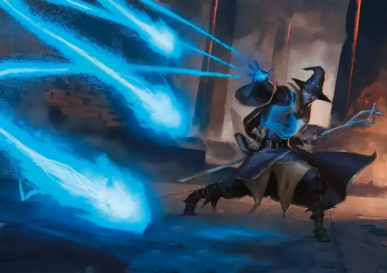

Волшебная стрела
Magic Missile
1 уровень, Воплощение

Время сотворения Действие
Дистанция 120 футов
Компоненты В, С
Длительность Мгновенная
Подклассы Бронник (Артефактор)
Вы создаете три светящихся дротика из магической силы. Каждый дротик попадает в существо по вашему выбору, видимое вами в пределах дистанции. Каждый дротик наносит 1к4 + 1 Силового урона. Все дротики попадают одновременно, и вы можете направить их как в одно существо, так и в несколько.
Используя ячейку заклинания большего уровня. Заклинание создает по одному дополнительному дротику за каждый уровень ячейки выше 1-го.